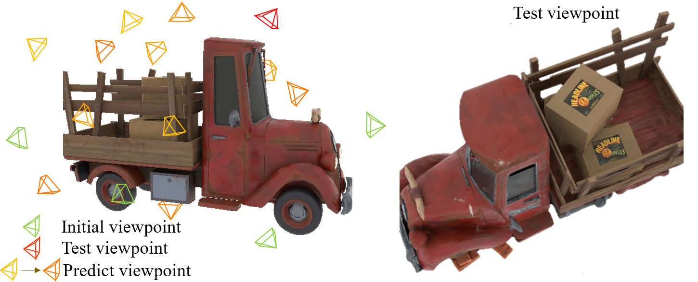

Auto3R
Automated 3D Reconstruction and Scanning via Data-driven Uncertainty Quantification
TL; DR:
- 1. Automated 3D Reconstruct while Scanning;
- 2. Provide the best scanning viewpoint based on the current results;
- 3. Predict the uncertainty under each viewpoint.
1. Scanning viewpoints and reconstruction results at novel viewpoints

2. A real-world scanning task
3. Comparison with other view select-based methods

4. Citation our paper
@article{Auto3R2025,
title={Auto3R: Automated 3D Reconstruction and Scanning via Data-driven Uncertainty Quantification},
author={Shen, Chentao and Zheng, Sizhe and Wu, Bingqian and Feng, Yaohua and Fei, Yuanchen and Mei, Mingyu and Jiang, Hanwen and Huang, Xiangru},
journal={arXiv preprint arXiv:xxxx.xxxxxx},
year={2025}
}
title={Auto3R: Automated 3D Reconstruction and Scanning via Data-driven Uncertainty Quantification},
author={Shen, Chentao and Zheng, Sizhe and Wu, Bingqian and Feng, Yaohua and Fei, Yuanchen and Mei, Mingyu and Jiang, Hanwen and Huang, Xiangru},
journal={arXiv preprint arXiv:xxxx.xxxxxx},
year={2025}
}
Please cite our work if you find it helpful in your research!